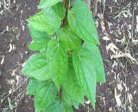

HORT 282 :: Lecture 16 :: BETEL VINE

BETEL VINE
(Piper betle, Piperaceae)
Betel (Piper betle Linn.) leaf is used as a masticatory along with arecanut, lime and catechu. The probable places of origin of betel vine are India, Sri Lanka, Malaysia and Indonesia. In India it is an important commercial crop of Andhra Pradesh, occupying about 3,600 hectares. The vine is a dioecious (male and female plants are different), shade loving perennial root climber.
Botany
- Woody climber with adventitious roots at swollen nodes.
- Leaf simple, alternate, cordate, 8-12 cm wide, 12-16 cm long, with Description odor and spicy taste.
- Inflorescence in axillary spike; flowers unisexual, white.
- Fruit globose berry.
Climate and Soil
Betel vine requires a tropical climate with high atmospheric humidity. It can be cultivated in the uplands as well as in wetlands. In Kerala, it is mainly cultivated in arecanut and coconut gardens as an intercrop. The crop grows best on well-drained fertile soils. Waterlogged, saline and alkali soils are unsuitable for its cultivation. The crop also comes up very well in lateritic soils. Proper shade and irrigation are essential for successful cultivation of this crop. An annual rainfall ranging from 200 to 450 cm is ideal. The crop tolerates a minimum temperature of 10ºC and a maximum of 40ºC. Extremely low atmospheric temperature leads to leaf fall. Hot dry winds are harmful.
Varieties
There are about 100 varieties of betel vine in the world, of which about 40 are found in India and 30 in West Bengal. There are mainly five cultivars of betelvine viz. Desawari, Bangla, Kapoori, Meetha and Sanchi. While Kapoori and Sanchi are the principal cultivars in the peninsular India, Bangla and Deswari are common in North India. Cv. Meetha is grown on commercial scale in West Bengal only. Betelvine is cultivated over an area of 40,000 ha in the country. It is a capital and labour intensive cash crop.
The important types grown in Tamil Nadu are Thulasi, Venmani, Arikodi, Kalkodi, Karilanchi, Karpuram, Chelanthikarpuram, Koottakkodinandan, Perumkodi, Amaravila and Pramuttan, Kallarkodi, Revesi, Karpuri, SGM 1, Vellaikodi, Pachaikodi, Sirugamani 1, Anthiyur kodi, Kanyur kodi.
Betelvine varieties |
|
|
|
 |
|
Season
November - December and January – February are optimum for cultivation.
Preparation of field
The field is prepared to a fine tilth and beds of 2 m wide are formed to a convenient length. Provide drainage trenches of 0.5 m width by 0.5 m depth in between two adjoining beds. Plant the seeds of the live supports i.e. Agathi (Sesbania grandiflora) in long rows. About 750 banana suckers are planted at the edges of the beds, which are used, for tying the vines on the live support and for packing the betel leaf. When the Agathi plants reach 4 m height, they are topped off for maintaining the height. The crop is planted in two rows in beds of 180 cm width on Agathi plants with a spacing of 45 cm between plants in the row.
Irrigation
Irrigate the field immediately after planting and afterwards once in a week.
After cultivation
Training of the live standards
Before the establishment of vines, the side branches of Agathi trees up to a height of 2 m are removed for early creeping of the vines.
Trailing of the vines
The cuttings sprout and creep in about a month. At this time, they must be trailed on the standards. Training is done by fixing the vine at intervals of 15 to 20 cm along the live standards loosely with the help of banana fibre. Training is done at every 15 - 20 days interval depending upon the growth of vines.
Instead of live standards sometimes bamboo standards are erected at intervals and linked by tying at heights of 30 cm and 150 cm using coir rope. In the initial stages trailing is done on coir tied for the purpose. Trailing is done further by tying the vines, at intervals of 15-20 cm along the standards loosely with the help of banana fibre.
When vines come in contact with standards, they produce adventitious roots using which they cling to support. Trailing is done every 15-20 days depending on the growth of vines.
Bamboo standard Live standard
Lowering of vines
Under normal cultivation, the vines grow to height of 3 m in one year period. When they reach this height their vigour to produce normal size leaf are reduced and they need rejuvenation by lowering during March - April. After the vine is lowered, the tillers spring up from the nodes at the bends of the coiled vines at the ground level and produce many primary vines. Irrigation should be given after each lowering.
Manuring
Apply 150 kg N/ha/year through Neem cake (75 kg N) and Urea (75 kg N) and 100 kg P2O5 through Super phosphate and 30 kg Muriate of potash in three split doses first at 15 days after lifting the vines and second and third dose at 40 - 45 days intervals. Apply on beds shade dried neem leaf or Calotropis leaves at 2 t/ha and cover it with mud (2 t in 2 split doses).
Time of application |
Nutrients (kg/ha) |
||
N |
P |
K |
|
Basal dressing |
37.5 |
100 |
50 |
Top dressing @ 3 split doses |
112.5 |
0 |
0 |
Pests
Scale insects
Select scale-free seed vines. Spray Chlorpyriphos 20 EC 2 ml/lit when one or two scales are noticed on the basal portion of the stem/leaves. Direct the spray solution to the basal portion of the vines. Spray NSKE 5 % or Malathion 50 EC 1 ml/lit.
Mites
Mites can be controlled by spraying Wettable sulphur 50 WP @ 1 g/lit or Dicofol 18.5 EC 0.5 ml/lit.
Sooty mould (Aphids)
To control aphids spray Chlorpyriphos at 2 ml/lit on Agathi leaves. Clip off excess Agathi leaves.
Mealy bugs
Mealy bugs can be controlled by spraying Chlorpyriphos 20 EC at 2 ml/lit or Dimethoate 30 EC 2ml/lit. Concentrate the spray towards the collar region.
Nematode
Application of Neem cake at 1 t/ha or shade dried Calotropis leaves @ 2.5 t/ha can be applied to soil for controlling the nematode populations.
Diseases
Phytophthora Wilt
Integrated disease management of Phytophthora wilt
- Select well matured (more than 1 year old) seed vines free from pest and diseases.
- Soak the seed vines for about 30 minutes in Streptocylin 500 ppm or Bordeaux mixture 0.5 %.
- Apply 150 kg N/ha/year through Neem cake (75 kg N) and Urea (75 kg N) and 100 kg P2O5 through Super phosphate and 30 kg Muriate of potash in 3 split doses first at 15 days after lifting the vines and second and third dose at 40 - 45 days intervals. Apply on beds, shade dried neem leaf or Calotropis leaves at 2 t/ha and cover it with mud (2 t in 2 split doses).
- Drench Bordeaux mixture 0.25% in basins formed around the vine at monthly intervals starting from October – January, three times soil drench and six times spray from June - July.
- During winter season avoid frequent irrigation.
- Remove the affected vines away from the garden and burn them.
- Application of Trichoderma viride @ 5 g/vine.
Bacterial leaf spot, blight and bacterial stem rot
Spray Streptocyclin @ 400 ppm + Bordeaux mixture @ 0.25% at the time of first disease symptoms appear. Continue spraying at 20 days intervals. Always spray the chemical after plucking the leaves.
Anthracnose
Spray 0.5% Bordeaux mixture after plucking the leaves after the first appearance of the symptom. The variety Karpoori is susceptible to the disease.
Powdery mildew
Powdery mildew can be controlled by spraying 0.2% Wettable sulphur after plucking the leaves.
Harvest
In about 3-6 months time, vines grow to a height 150-180 cm. At this stage branching is noticed in the vines. Leaves are removed along with the petiole with the right thumb. Once harvesting is commenced, it is continued almost every day or week. The interval of harvesting varies from 15 days to about a month till the next lowering of vines. After each harvest, manuring has to be done.
Yield
About 75 to 100 lakh leaves/ha/year can be obtained.
************
- Betel vine belongs to the family?
- Propagation methods in Betal vine is _______________
- Major disease of betelvine is ________________
- List out the varieties of betel vine is ______________
- Example for a standard tree species for the cultivation of betel vine is ____________
| Download this lecture as PDF here |